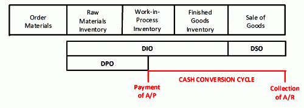
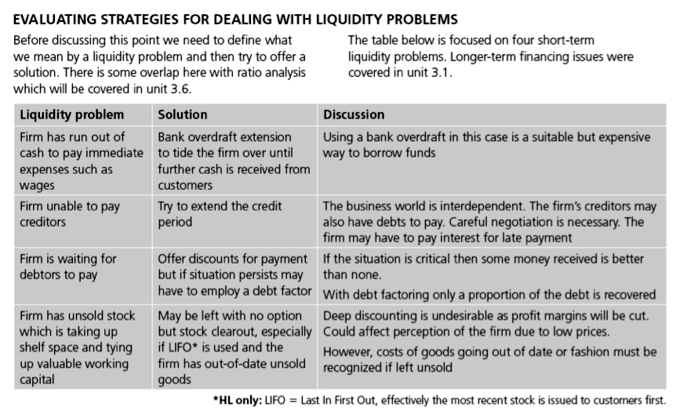
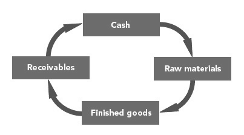

Working Capital = current assets - current liabilities.
Calculate a company's working capital
Working capital (WC) is a financial metric which represents operating liquidity available to a business, organization, or other entity, including governmental entity. Along with fixed assets, such as plant and equipment, working capital is considered a part of operating capital.
Working capital can be found through the following formula:
WC=CA-CL (Working Capital = current assets - current liabilities)
Current assets (CA) is an accounting term that refers to assets that can easily be turned into cash. For example, cash is a current asset, but so are most accounts receivable.
Current liabilities (CL) is an accounting term similar to CA: CL is the amount of liabilities that are expected to be settled in cash within a year (or the operating cycle of the company).
The difference between the two (WC) is a measurement of liquidity. It signals whether or not the company has enough assets to turn into cash to pay off upcoming liabilities. It is not a perfect signal, however.
Since most expenses and debt must be paid in cash , having positive WC shows that the company has the ability to pay off expenses and debt that will arise or come due in the short-term. Most purchases, including food, must be made with a specific asset–cash. Not all current assets can be used to pay off expenses of debts.
WC, though, does not guarantee that a company can pay off all short-term expenses or liabilities. Simply having positive WC does not mean necessarily that a company will be able to pay off all expenses. Suppose that a company has current assets of \$100: \$20 of cash and \$80 of accounts receivable. They also have \$50 of current liabilities. That means that they have WC of +\$50. One of their accounts payable comes due tomorrow, so the company owes \$40. They have \$20 of cash on hand, but can't get the other \$20 by tomorrow because they can't collect \$20 of accounts receivable by tomorrow. The company cannot pay a short-term expense, even though a positive WC says that the company should be able to pay off most expenses and loans in the short-term.
WC is not a guarantee that the company will have enough cash for each expense, merely that they have operating liquidity.
Working capital (WC) can be controlled by changing the levels of current assets and/or current liabilities through a number of mechanisms.
Discuss how a company can adjust its working capital
Each company has different demands for how much Working Capital (WC) they need, but all companies prefer to have positive WC (recall that WC = current assets - current liabilities). Having too little WC impairs a company's ability to meet it's financial obligations. It is hard to pay expenses or debts that come due in the short-term. Having too much WC can also be bad because it means that there are assets that are not being invested. Holding too many short term assets slows future growth of the company. Thus, managing WC to an acceptable level is one of the most important jobs of management .
WC can be adjusted by increasing or decreasing its two components: current assets (CA) and current liabilities (CL). Increasing CA or decreasing CL increases WC, and vis versa. Management can enact a number of policies, some of which are highlighted below:
By adjusting these four primary influencers on CA and CL, management can change WC to a desirable level.
Working capital (WC) is a measurement of a company's operating liquidity.
Discuss why working capital is important to businesses
Working capital (WC) is an important metric for all businesses, regardless of their size. WC is a signal of a company's operating liquidity . Having enough WC means that the company should be able to pay for all of its short-term expenses and liabilities. Liquidity is a measurement of a company's ability to quickly turn assets into cash.
Large companies pay attention to WC for the same reason as small ones do: WC is a measure of liquidity, and thus is a measure of their future credit-worthiness. Companies who want to borrow by issuing bonds or purchasing commercial paper (a market of large, short-term loans for big companies) will find it more expensive if they do not have enough WC. If they are a public company, their stock price may fall if the market doesn't believe they have adequate WC.
For small businesses and start-ups, unable to access financial markets for borrowing, WC has more dire implications. WC can also be described as the amount of money that a small business or start-up needs to stay in operation. Start-ups need to pay attention to their WC because it is the amount of money they need to keep the business running until they break-even (start earning a net profit).
On one hand, WC is important to because it is a measure of a company's ability to pay off short-term expenses or debts. On the other hand, too much working capital means that some assets are not being invested for the long-term, so they are not being put to good use in helping the company grow as much as possible.
WC is only one measure of a company's operating liquidity. It is not the only measure, and it is certainly not a guarantee of a company's ability to pay. A company may have positive WC, but not enough cash to pay an expense tomorrow. Similarly, a company may have negative WC, but may be able to adjust some of their debt into long-term debt in order to reduce their current liabilities.
WC is an important metric, but is not the whole story of a company's financial health.
Working capital needs will vary depending on the type of the business and its operational requirements.
Describe the goals of a business in the context of ts working capital needs
Working capital is a financial metric which represents the operating liquidity available to a business. Working capital is considered a part of operating capital along with fixed assets, such as plant and equipment. Sufficient working capital is required to ensure that a firm is able to continue its operations and that it has sufficient funds to satisfy both maturing short-term and long-term debt and take care of upcoming operational expenses. However, too much working capital can carry with it a higher cost of capital. A company can be endowed with assets and profitability but short of liquidity if its assets cannot readily be converted into cash. The management of working capital involves managing inventories, accounts receivable and payable, and cash.
When calculating working capital, we think in terms of net working capital, which is calculated as current assets minus current liabilities. This is the figure commonly used in valuation techniques such as discounted cash flows. If current assets are less than current liabilities, an entity has a working capital deficiency, also called a working capital deficit. Current assets and current liabilities include three accounts which are of special importance. These accounts represent the areas of the business where managers have the most direct impact:
A company ideally wants accounts receivable to be collected as quickly as possible in order to have as much use of the funds as possible. Conversely, a firm strives to put off the settlement of accounts payable as long as possible for the same reason. The current portion of debt is also critical, because it represents a short-term claim to current assets and is often secured by long term assets. Common types of short-term debt are bank loans and lines of credit. Inventory is a special case in which even non-financial managers have a stage. Too much inventory on hand will reduce the risk of a company failing to satisfy customer needs, but it can also reduce profitability. An example of reduced profitability would be in the computer industry, where inventories regularly lose value because of the fast-moving nature of the industry.
In any company, large or small, there is an inherent tradeoff between liquidity and profitability. Large companies possess resources to help them manage this tradeoff, such as an accounting department, negotiating power with their suppliers, or access to the capital markets. For the entrepreneur, however, who is often resource-starved and doesn't have enough operating history to secure additional credit, managing this tradeoff can feel like walking a tightrope. Consider the case of a new customer for a small company. This new customer has the potential to offer huge growth in the company's sales, but this growth in sales will be accompanied by a subsequent growth in variable costs. The company may not have the resources, i.e., working capital, to meet these variable costs that come with increased sales.
Recognize the broader objectives of working capital, as well as how organizations can consider a long-term perspective when viewing the utilization of working capital.
Identify the primary objectives of working capital, and how a longer-term perspective can offer insights
Working capital is a calculation of the overall operating liquidity an organization has access to at a given moment, derived through a simple calculation from the balance sheet:
Working Capital = Current Assets - Current Liabilities
Current assets are items a business owns that are either current cash, or assets that can be rapidly converted to cash, such as accounts receivables, cash, cash equivalents, short-term investments, and inventory. Current liabilities are debts owed in the short term, such as accounts payable, short-term debts, and other obligations within a short operational cycle.
When you subtract what is owed in the short term from what is available, an organization can project how much free working capital is on hand during the operating cycle.
This free working capital can be utilized in a variety of ways. Working capital under-utilized incurs the opportunity costs associated with the time value of money, and organizations must use financial planning to ensure appropriate utilization of this capital over the longer term.
While short-term planning is predominately what is used in respect to working capital (due to the short term nature of the inputs and outputs involved), it is reasonable to set long-term polices and strategies for incorporating changes in working capital into financial strategy. The primary benefits of leveraging working capital are liquidity and profitability, each of which can be viewed through a longer term lens.
When discussing long-term objectives, the focal point is broader strategy (as opposed to tactics). From a strategic perspective, there is a certain amount of liquidity business would like to maintain at any given moment to ensure that they can capture external opportunities in the market. Having easily accessible working capital at any given moment enables organizations to minimize the opportunity cost of foregone opportunities, and careful regulation of working capital strategic criteria can ensure the appropriate amount is available.
The other broader objective of working capital is how effectively it is utilized over a given time period. From the long-term perspective, this profitability metric will be quite a bit different than the short term. From a longer-term perspective, working capital profitability decisions revolve around how much should be available within any short-term time frame in order to maximize the return (on average) of existing working capital. By looking at differences in working capital availability over a long period of historical data, the organization can make rough estimations of the optimal amount of working capital availability that allows optimal growth.
Despite the potential advantages of longer-term planning in working capital, it is still largely a field of shorter term decision making. Generally, working capital should be considered within a one year or less time frame, making it more often a shorter term decision.
Decisions relating to working capital are usually short-term, since it is the difference between current assets and current liabilities.
Explain how the cash conversion cycle influences working capital management
Working capital is the amount of capital that is readily available to an organization. Working capital is the difference between cash resources or assets readily convertible into cash (current assets) and cash obligations (current liabilities). As a result, the decisions relating to working capital are almost always current, i.e., short term, decisions. In other words, working capital management differs from capital investment decisions - specifically in terms of discounting and profitability. Working capital management applies different criteria in decision making. The main considerations are cash flow / liquidity and profitability / returns on capital. The most widely used measure of cash flow is the net operating cycle or cash conversion cycle. This measures how long a firm will be deprived of cash if it increases its investment in resources in order to expand customer sales.
The cash conversion cycle indicates the firm's ability to convert its resources into cash and informs management of the liquidity risk entailed by growth . Because this number effectively corresponds to the time that the firm's cash is tied up in operations and unavailable for other activities, management generally aims at shortening the cash conversion cycle as much as possible. However, shortening the cycle creates its own risks. While a firm could even achieve a negative cash conversion by collecting from customers before paying suppliers, a policy of strict collections and lax payments is not typically sustainable. The aim of the study and calculation of the cash conversion cycle is to change the policies relating to credit purchase and credit sales. A firm can change its standards for payment on credit purchases and getting payment from debtors on the basis of cash conversion cycle. If the firm is in an effective cash liquidity position, it can maintain its past credit policies.
Above is a chart showing a sample cash conversion cycle.
A firm will use a combination of policies for managing working capital, focusing on cash flow, liquidity, profitability, and capital return.
Describe refinancing risk and how it influence working capital policy
Guided by criteria measuring cash flow, liquidity, profitability, and return on capital, the management of a firm will use a combination of policies and techniques for the management of working capital. These policies aim to manage the current assets - generally, cash and cash equivalents, inventories and debtors - and the short term financing, such that cash flows and returns are acceptable. As with any decision involving the management of capital, the firm's goal should be to minimize the overall cost of capital and maximize value to the shareholders . In order to effectively manage cash flow, a firm should identify the cash balance which allows for the business to meet day to day expenses, but reduces cash holding costs - i.e., the opportunity cost of holding cash as opposed to investing it.
This chart lays out sample working capital issues and some possible solutions.
A company should also identify the level of inventory which allows for uninterrupted production, but reduces the investment in raw materials – and minimizes reordering costs – and therefore increases cash flow. Another area of concern for a firm will be managing debtors. Management should identify the appropriate credit policy so that any impact on cash flows and the cash conversion cycle will be offset by increased revenue and return on capital. Moreover, management should implement appropriate credit scoring policies and techniques so that the risk of default on any new business is acceptable given these criteria.
A final area management should be concerned with when deciding on a working capital policy is short-term financing. A firm should identify the appropriate source of financing, given the cash conversion cycle. Inventory is ideally financed by credit granted by the supplier. However, it may be necessary to utilize a bank loan.
One of the objectives within working capital management and general financing decisions is to match the maturity of liabilities with the life expectancy of assets. This allows liabilities to be self-liquidating. If the maturity of liabilities is less than the life expectancy of assets, a firm faces refinancing risk since it will have to raise new capital to pay off liabilities. If the maturity of liabilities is longer than the life expectancy of assets, then there should be sufficient working capital available to pay off debts. The mismatching of liabilities with assets can occur if financing is not available.
For example, suppose long-term financing is not available. Short-term sources of financing may have to be used. Mismatching can also be intentional. For example, suppose a company expects long-term interest rates to fall. The firm may want to finance assets with short-term maturities since it can refinance in a few years at much lower rate.
Management of working capital requires evaluating factors affecting cash flows -- including the evaluation of appropriate interest rates.
Evaluate a company's interest rates based on its stage of development
The management of working capital takes place in the realm of short-term decision-making. These decisions are, therefore, based primarily on profitability, cash flows and their management. Many criteria go into the management of cash flows and subsequently the management of working capital -- including the evaluation of appropriate interest rates.
The interest rate most commonly used in working capital management is the cost of capital. The cost of capital, in a financial market equilibrium, will be the same as the market rate of return on the financial asset mixture the firm uses to finance capital investment. In other words, a company's cost of capital is the cost of obtaining funds for operation through the sale of equity or debt in the marketplace. In market equilibrium, investors will determine what return they expect from providing funds to a company. The return expected on debt depends upon the credit rating of the company, which takes into account a number of factors to determine how risky loaning funds to a company will be. The return expected from equity also involves a number of factors, usually centered around the operation of the company and its prospects for profitability. Some conventional rates of return expected for various types of companies include:
When evaluating short-term profitability, company's may use measures such as return on capital. ROC is shown as a percentage, determined by dividing relevant income for the 12 months by capital employed. Firm value is enhanced when, and if, the return on capital, which results from working-capital management, exceeds the cost of capital, which results from capital investment decisions. ROC measures are therefore useful as a management tool, in that they link short-term policy with long-term decision making.
As mentioned, working capital decisions are made with the short-term in mind. Thus, working capital policies aim at managing the current assets (generally cash and cash equivalents, inventories and debtors) and the short term financing, such that cash flows and returns are acceptable. Decision criteria that focus on interest rates include debtors management and short-term financing.
Debtors management involves identifying the appropriate credit policy -- i.e. credit terms which will attract customers -- such that any impact on cash flows and the cash conversion cycle will be offset by increased revenue and, hence, return on capital (or vice versa). Interest rates can affect this decision because of the time value of money. If inflation is at a high level or there are opportunities foregone because of lack of working capital, a firm will more than likely have a stricter credit policy.
Short-term financing involves identifying the appropriate source of financing, given the cash conversion cycle. For instance, inventory is ideally financed by credit granted by the supplier; however, it may be necessary to utilize a bank loan or to "convert debtors to cash.". Another possible solution is to use services from companies sell outstanding invoices to raise working capital for their clients. Obviously interest rates will play a vital role in determining whether an option such as a bank loan is viable for obtaining short-term financing. Interest rates of working capital financing can be largely affected by discount rate, WACC and cost of capital.
The main considerations of working capital management decisions are (1) cash flow/ liquidity and (2) profitability/return on capital.
Identify which factors influence a company's working capital management decisions
Working capital is the amount of capital which is readily available to an organization. That is, working capital is the difference between resources in cash or readily convertible into cash (current assets), and cash requirements (current liabilities). As a result, the decisions relating to working capital are always current (i.e., short-term decisions). In addition to the time horizon, working capital decisions differ from capital investment decisions in terms of discounting and profitability considerations; they are also "reversible" to some extent.
Working capital management decisions are, therefore, not made on the same basis as long-term decisions, and working capital management applies different criteria in decision making: the main considerations are (1) cash flow/liquidity and (2) profitability/ return on capital (of which cash flow is generally the most important).
One measure of cash flow is provided by the cash conversion cycle—the net number of days from the outlay of cash for raw material to receiving payment from the customer. As a management tool, this metric makes explicit the interrelatedness of decisions regarding inventories, accounts receivable and payable, and cash. Because this number effectively corresponds to the time that the firm's cash is tied up in operations and unavailable for other activities, management generally aims at a low net count.
Cash conversion cycle is a main criteria for working capital management.
In this context, the most useful measure of profitability is return on capital (ROC). The result is shown as a percentage, determined by dividing relevant income for the 12 months by capital employed; return on equity (ROE) shows this result for the firm's shareholders. Firm value is enhanced when, and if, the return on capital, which results from working-capital management, exceeds the cost of capital, which results from capital investment decisions as above. ROC measures are, therefore, useful as a management tool, in that they link short-term policy with long-term decision making.
Another factor affecting working capital management is credit policy of the firm. It includes buying of raw materials and selling of finished goods either in cash or on credit. This affects the cash conversion cycle.
Management uses policies and techniques for the management of working capital such as cash, inventory, debtors and short term financing.
Identify the four main areas of variability of working capital management
Decisions relating to working capital and short-term financing are referred to as working capital management. These involve managing the relationship between a firm's short-term assets and its short-term liabilities. The goal of working capital management is to ensure that the firm is able to continue its operations and that it has sufficient cash flow to satisfy both maturing short-term debt and upcoming operational expenses.
Management will use a combination of policies and techniques for the management of working capital. The policies aim at managing the current assets (generally cash and cash equivalents, inventories and debtors) and the short-term financing, such that cash flows and returns are acceptable.
1. Cash management
Identify the cash balance that allows for the business to meet day-to-day expenses, but reduces cash holding costs.
2. Inventory management
Identify the level of inventory that allows for uninterrupted production but reduces the investment in raw materials and minimizes reordering costs and, hence, increases cash flow. Besides this, the lead times in production should be lowered to reduce work in process (WIP) and similarly, the finished goods should be kept on as low level as possible to avoid over production. Identify the level of inventory which allows for uninterrupted production but reduces the investment in raw materials and minimizes reordering costs and, hence, increases cash flow.
3. Debtors management
Identify the appropriate credit policy (i.e., credit terms which will attract customers such that any impact on cash flows and the cash conversion cycle will be offset by increased revenue and hence return on capital or vice versa).
4. Short-term financing
Identify the appropriate source of financing, given the cash conversion cycle. The inventory is ideally financed by credit granted by the supplier; however, it may be necessary to utilize a bank loan (or overdraft), or to "convert debtors to cash" through "factoring. "
The main accounts which affect the value of working capital are accounts receivable, inventory, and accounts payable.
Calculate a company's working capital
Working capital (WC) is a financial metric which represents operating liquidity available to a business, organization, or other entity - including a governmental entity. Along with fixed assets such as plant and equipment, working capital is considered a part of operating capital. Net working capital is calculated as current assets minus current liabilities. It is a derivation of working capital that is commonly used in valuation techniques, such as DCFs (Discounted Cash Flows). If current assets are less than current liabilities, an entity has a working capital deficiency, also called a "working capital deficit. "
A company can be endowed with assets and profitability but short on liquidity if its assets cannot readily be converted into cash. Positive working capital is required to ensure that a firm is able to continue its operations and that it has sufficient funds to satisfy both maturing short-term debt and upcoming operational expenses. The management of working capital involves managing inventories, accounts receivable and payable, and cash.
Current assets and current liabilities include three accounts which are of special importance. These accounts represent the areas of the business where managers have the most direct impact:
Therefore, in this context, we calculate available working capital using the following formula:
Working capital is equal to accounts receivable, plus current inventory, minus accounts payable.
These values can be readily found on a company's balance sheet. The current portion of debt (payable within 12 months) is critical, because it represents a short-term claim to current assets and is often secured by long-term assets. Common types of short-term debt are bank loans and lines of credit.
As an example, imagine a company has accounts receivable of \$10,000, current inventory that has a value of \$5,000, and accounts payable of \$7,000. We can find working capital by:
Working Capital = \$10,000 + \$5,000 - \$7,000 = \$8,000
An increase in working capital indicates that the business has either increased current assets (that it has increased its receivables, or other current assets) or has decreased current liabilities, for example, has paid off some short-term creditors.
The common commercial definition of working capital for the purpose of a working capital adjustment in a mergers and acquisitions transaction (i.e., for a working capital adjustment mechanism in a sale and purchase agreement) is equal to:
Current Assets - Current liabilities (excluding deferred tax assets/liabilities, excess cash, surplus assets, and/or deposit balances).
Cash balance items often attract a one-for-one purchase-price adjustment.
{kind=link}
{kind=link}
{kind=link}